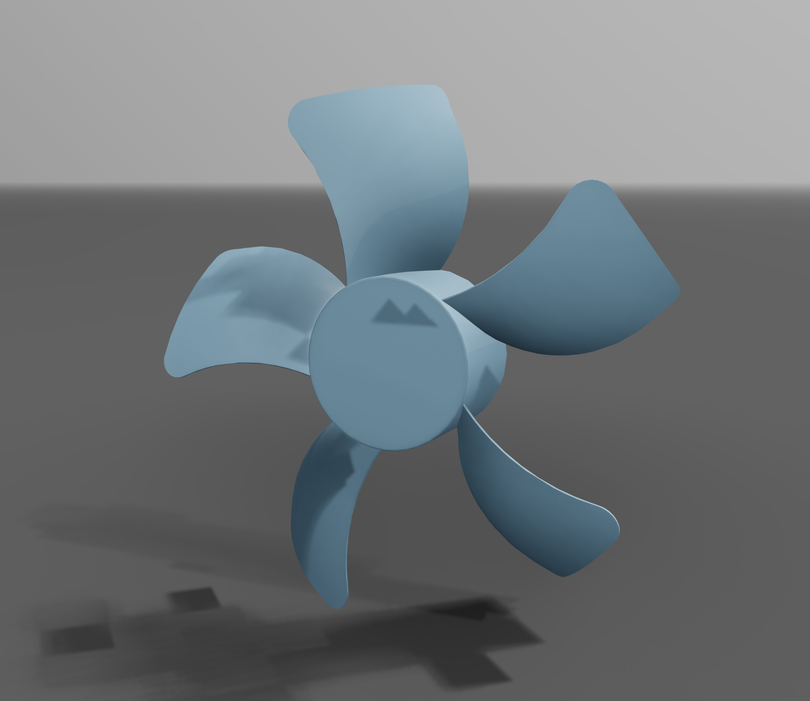
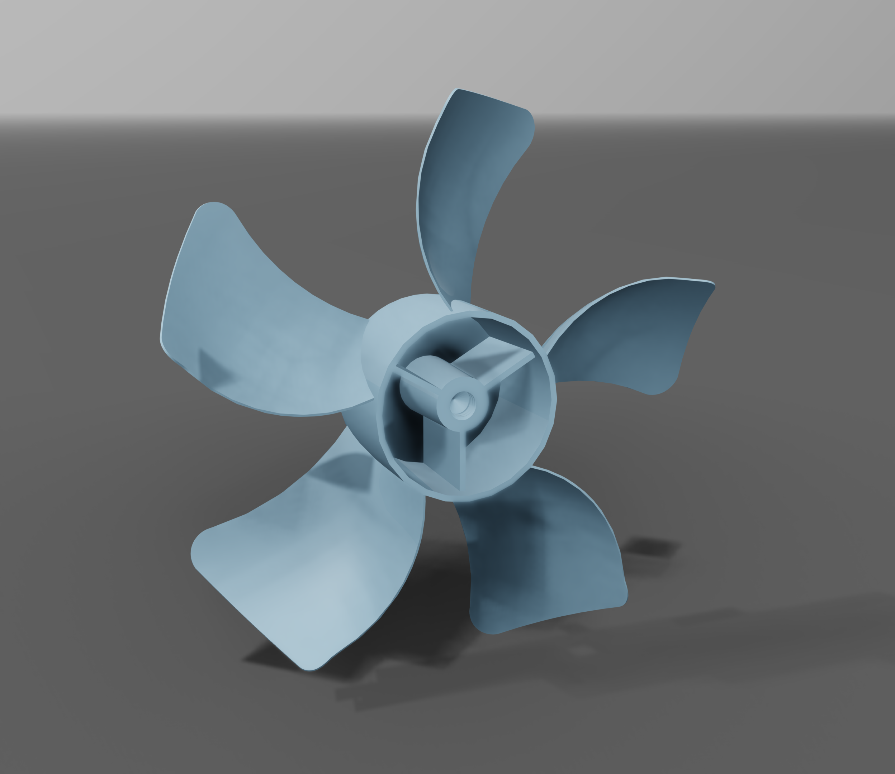
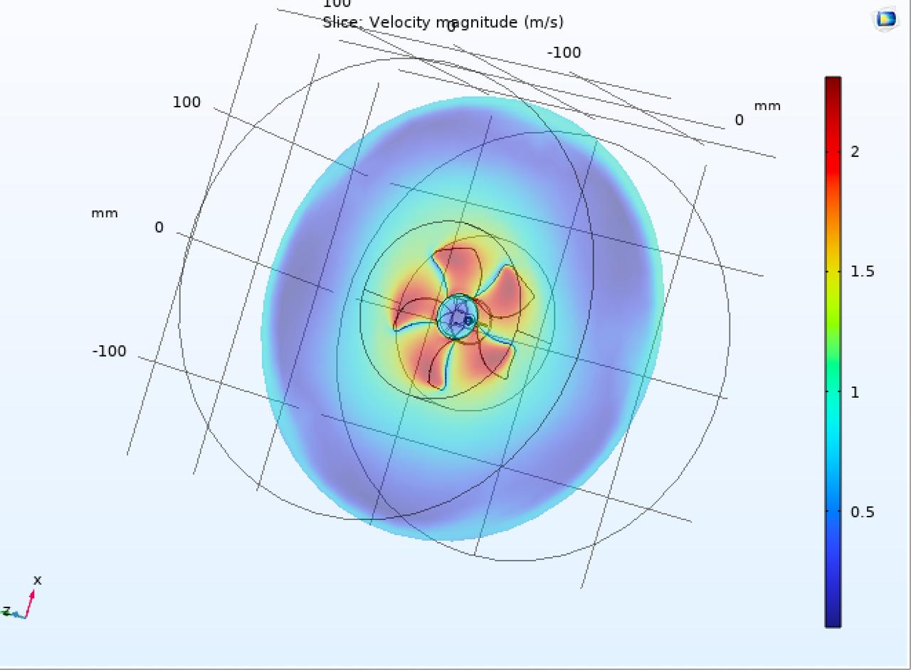
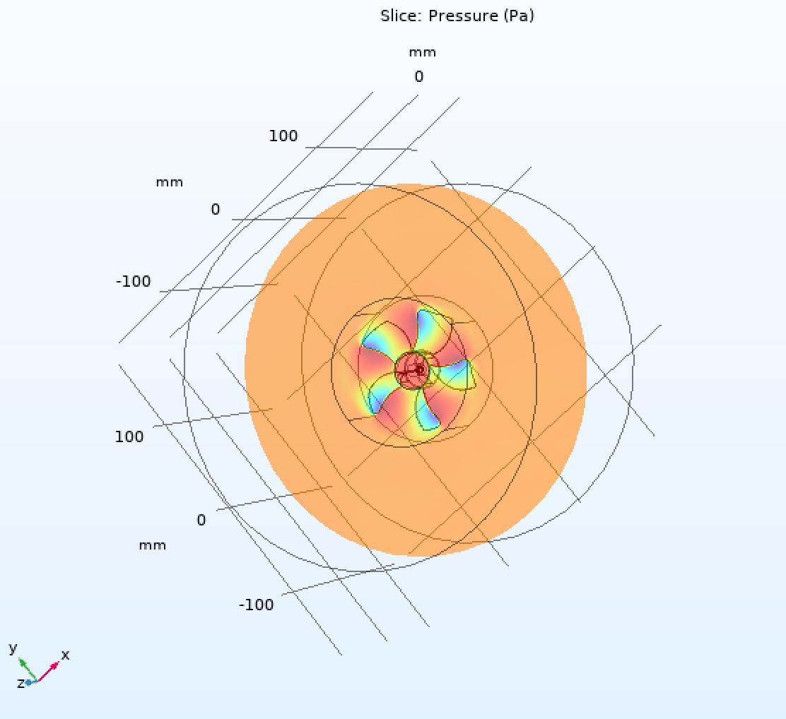

Design → Predict → Verify · COMSOL Multiphysics

View 1 — Front / isometric

View 2 — Rear / hub detail
ω = 157.08 rad/s
vtip = 9.11 m/s (r = 58 mm)
Q ≈ 0.04814 m³/s (A = 0.01057 m², η = 0.50)
Re = 35,763
First-order theoretical baseline for comparison with CFD. Not a substitute for numerical analysis.
| Method | Flow Rate (m³/s) |
|---|---|
| Hand calculation | 0.04814 |
| CFD — Inlet | 0.03830 |
| CFD — Outlet | 0.03903 |
| CFD — Average | 0.03867 |

Velocity scales with radius (v = ω × r). Peak at tip; hub and far-field near zero.

Higher pressure on pressure side, lower on suction side — produces net thrust.
Velocity field
Tip speed increases linearly with radius, so the highest velocities appear at the blade tips. Near the hub and outside the rotor plane, velocity approaches zero.
Pressure field
Each blade has a pressure face (driving flow) and a suction face. The pressure difference is the aerodynamic origin of the delivered airflow, analogous to lift on an aerofoil.